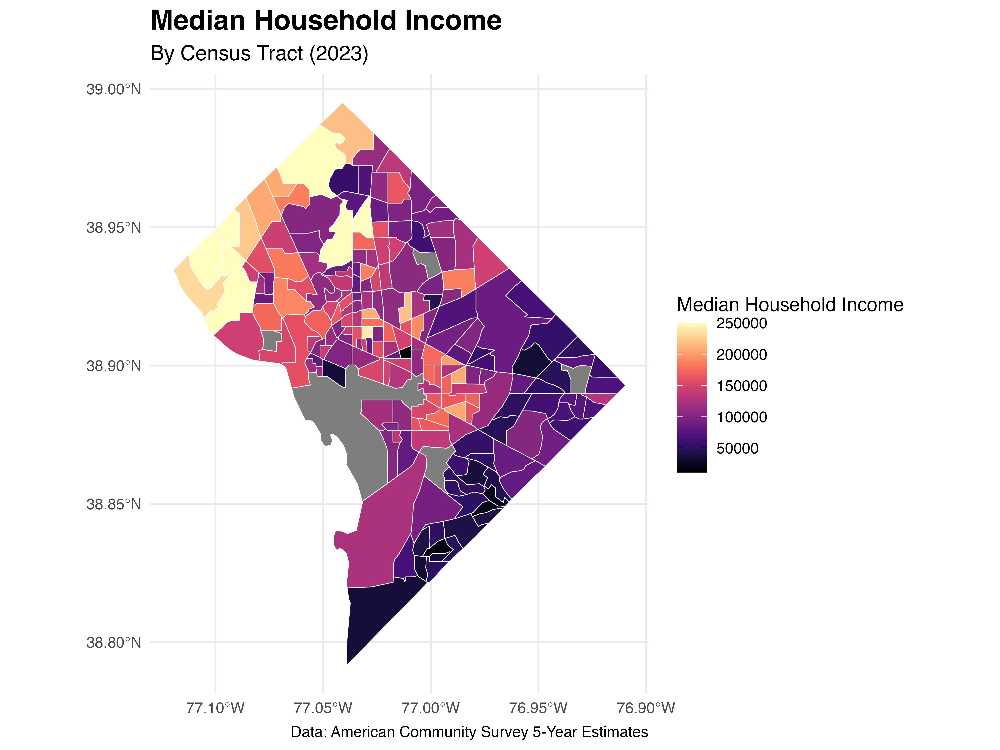
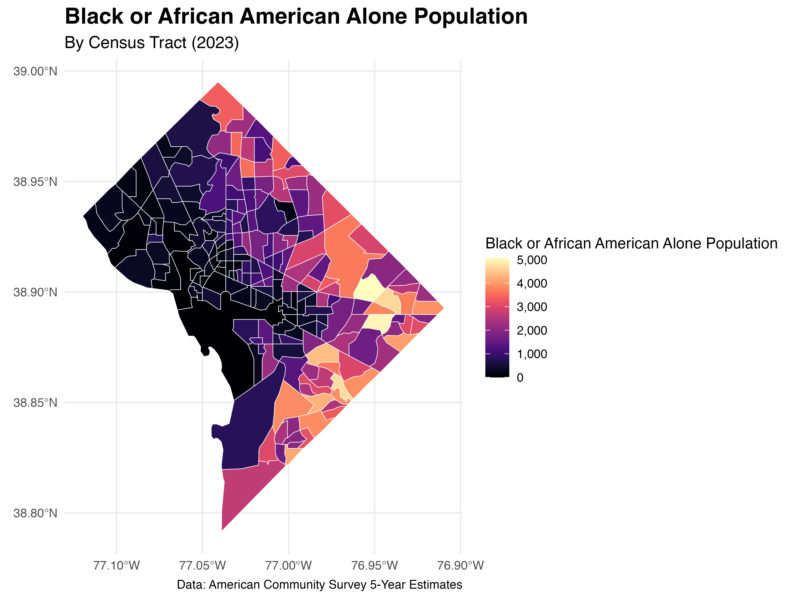
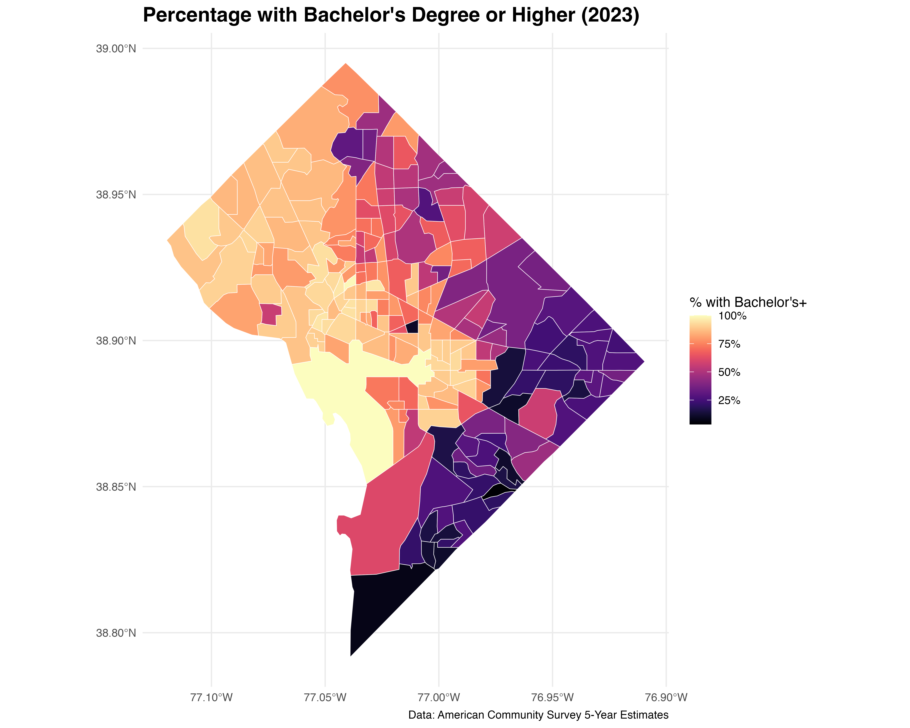
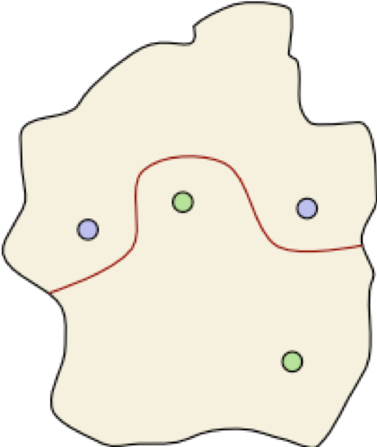
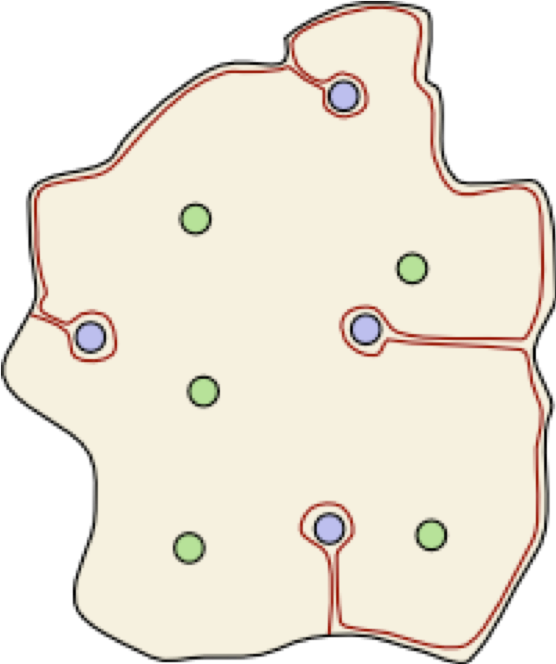

cre_correlates_dc <- get_acs(
geography = "tract", state = "DC",
year = 2023, survey = "acs5",
variables = c(
median_income = "B19013_001",
poverty_rate = "B17001_002",
unemployment_rate = "B23025_005",
no_health_insurance = "B27010_033",
educ_less_than_hs = "B15003_002",
median_age = "B01002_001",
housing_cost_burden = "B25070_010",
no_vehicle = "B08201_002",
black_population = "B02001_003",
median_rent = "B25058_001"),
summary_var = "B02001_001",
output = "wide", geometry = FALSE)Mapping Multidimensionality
Using Census Data to Model Neighborhood Communities
Racial segregation
Economic segregation
Dynamic features of isolation
A History of Dividing Walls
There are dynamic and complex historical structures that have segregated individuals based on a host of factors.
Legacies of Jim Crow (e.g., highways)
Redlining
Gerrymandering
Gentrification
Single Dimension - Income

Single Dimension - Race

Single Dimension - Education

Considering Multiple Dimensions
How might we analyze the while retaining critical insights from theorists that challenge monolithic narratives of any single group?
Theoretical framework: A Patchwork Nation
“If you pay attention to the complexity of the USA, its diversity and differences you soon realize that the ways we try to understand it – red and blue, Northeast and Midwest – are too simplistic. They are inadequate and misleading.” -Patchwork Nation Project
Details of community types (national-level)
Boom Towns: Rapidly “expanding” communities
Campus and Careers: Areas with a significant presence of higher education institutions
Immigration Nation: Areas with high concentrations of immigrant populations
Industrial Metropolis: Large urban areas with a strong industrial base
Emptying Nests: Communities with an aging population
Minority Central: Areas with large minority populations
Monied Burbs: Affluent suburban areas
Analytic Framework: Theory of Dividing Walls (city-level)
Consider a neighborhood as an “island” containing towns — the green tribe in two of the towns and the blue tribe in the other two.
Analytic framework
Using topology (mathematics) and topography (geology), we can formalize our analysis by attaching a few requirements:
The wall must be continuous, it must not intersect itself, it must not split, it must not pass through a town, and each end of the wall must be at the coast.
Let us call such a wall a dividing wall.
Dividing Walls Theorem

Theorem 1. Given any configuration of blue and green towns, there is a dividing wall that separates blue towns from green towns.
Is there a dividing wall?
 ::::{.theorem}
::::{.theorem}
Theorem 1. Given any configuration of blue and green towns, there is a dividing wall that separates blue towns from green towns.
::::
A Dividing Wall

Theorem 1. Given any configuration of blue and green towns, there is a dividing wall that separates blue towns from green towns.
Measurement Model: Dissimilarity Index
\[ D = \sum_{i=1}^{n} \Big| \dfrac{b_i}{B} - \dfrac{w_i}{W} \Big| \] Where:
\(b_i\) = Black population in tract \(i\)
\(B\) = Total Black population in city
\(w_i\) = non-Black population in tract \(i\)
\(W\) = non-Black population in city
This census data model, however, only provides a single dimension of a neighborhood.
Community Resilience Estimates
The CRE are a measure of the capacity of individuals and households within a community to absorb, endure, and recover from external stresses.
The CRE data combine American Community Survey (ACS) and the Population Estimates Program (PEP) data to identify social and economic vulnerabilities by geography.
There is a nice CRE Interactive Tool that allows for a quick overview of local contexts.
Spatial Model
– Base spatial model formulation: \[ \mathbf{y} = \boldsymbol{X}\beta + \tau + \epsilon \]
\(\boldsymbol{y}\) is a \(n\) x \(1\) response vector
\(\boldsymbol{X}\) is a design matrix that contains explanatory variables
\(\beta\) represents fixed effects coefficients
\(\tau\) denotes spatially dependent random errors
\(\epsilon\) represents independent random errors
Dimensionality in Spatial Models
Response vector structure (\(\mathbf{y}\)):
\[ \begin{aligned} \mathbf{y} &= \begin{bmatrix} y_1 \\ y_2 \\ \vdots \\ y_n \end{bmatrix} \end{aligned} \]
Each element, \(y_i\), represents the observed response at a neighborhood’s location \(i\)
These are ordered by adjacency relationships to preserve the geographical context
Review of distributions, spatial autocorrelation (i.e., \(Cov(y_i, y_j)\)), and decomposition
Dimensionality in Spatial Models
Design matrix of explanatory variables structure (\(\boldsymbol{X}\)):
\[ \boldsymbol{X} = \begin{bmatrix} 1 & x_{1, 1} & \ldots & x_{1, p} \\ 1 & x_{2, 1} & \ldots & x_{2, p} \\ \vdots & \vdots & \ddots & \vdots \\ 1 & x_{n, 1} & \ldots & x_{n, p} \\ \end{bmatrix} \]
First column is the intercept term
Subsequent columns represent \(p\) explanatory variables
Each row corresponds to a specific neighborhood’s covariates
Dimensionality in Spatial Models
Sample design matrix of explanatory variables
\[ \boldsymbol{X} = \begin{bmatrix} 1 & 65,000 & 0.62 & 3,200 \\ 1 & 28,000 & 0.32 & 5,100 \\ \vdots & \vdots & \vdots & \vdots \\ 1 & 127,000 & 0.75 & 6,840 \\ \end{bmatrix} \]
Column 1 is the \(E(\mathbf{y})\) when all other predictors are zero
Variable 1 (col 2) as median income
Variable 2 (col 3) as proportion of residents with HS diploma
Variable 3 (col 4) as population density (residents/sq. mi)
Next steps: Information and spatial segregation
There are multiple models for consideration:
Spatial regression using intersectional interactions
Structural Equation Modeling (SEM) with CRE components
Multilevel Analysis of Individual Heterogeneity and Discriminatory Analysis (MAIHDA)
Evans et al. (2024). A Tutorial for Conducting MAIHDA. Population Health, Vol. 26, 101664
Combines intersectional stratification with neighborhood-level clustering
Models individuals nested within: Intersectional strata (e.g., low-income Black men), community typologies from framework (e.g., Patchwork Nation) classifications
Special Thanks
Research assistants: Myles Ndiritu (Morehouse College), Zoe Williams (Howard University), Kade Davis (Morehouse College), Amari Gray (Morehouse College)
Lab manager: Lyrric Jackson (Spelman College)
Funding: Alfred P. Sloan Foundation, AUC Data Science Initiative, Data.org
Partners: The Carpentries
References
Chinni, D., & Gimpel, J. (2010). Our Patchwork Nation: The Surprising Truth about the “Real” America. Gotham Books.
Evans, C. R., Leckie, G., Subramanian, S. V., Bell, A., & Merlo, J. (2024). A tutorial for conducting intersectional multilevel analysis of individual heterogeneity and discriminatory accuracy (MAIHDA). SSM - Population Health, 26, Article 101664. https://doi.org/10.1016/j.ssmph.2024.101664.
U.S. Census Bureau. (2024). Community Resilience Estimates. Retrieved March 26, 2025, from https://www.census.gov/programs-surveys/community-resilience-estimates/about.html.